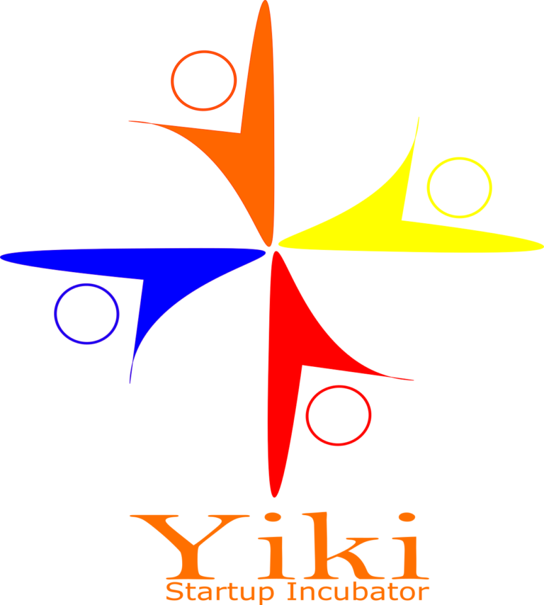

<main>
<mat-sidenav-container *ngIf="isMobile==true">
    <mat-sidenav position="end" fixedInViewport mode="over" #drawer>
        <mat-nav-list>
            <a mat-list-item routerLink="/sign-in"><button mat-button (click)="drawer.close()">Connexion</button></a>
            <a mat-list-item><button mat-button>Inscription</button></a>
            <a mat-list-item href="#1"><button mat-button>Trouver des freelanceurs</button></a>
            <a mat-list-item href="#2"><button mat-button>Trouver des clients</button></a>
            <a mat-list-item href="#2"><button mat-button>Trouver de l'aide</button></a>
        </mat-nav-list>
    </mat-sidenav>
    <mat-sidenav-content>
        <!--Debut de l'entete de la navigation-->

        <div class="entete">
            <div class="logo">
                yiki
            </div>
            <div class="sociaux">
                facebook
            </div>
            <div class="admin">
                admin@admin.com
            </div>
        </div>
        <!--Fin de l'entete de la navigation-->
        <!--Debut de la navigation de menu -->
        <mat-toolbar>
            <div class="logo">
            <mat-icon>home</mat-icon>Yiki
            </div>
            <button (click)="drawer.open()">
                <mat-icon>menu</mat-icon>
            </button>
        </mat-toolbar>
        <!--Fin de la navigation de menu -->
        <router-outlet ></router-outlet>
    </mat-sidenav-content>
</mat-sidenav-container>

          <!--Debut de l'entete de la navigation-->

          <div class="entete">
            <div class="sociaux">
                <a href="#"></a>
                <a href="#"></a> 
                <a href="#"> </a> 
            </div>

            <div class="login-admin">


                <div class="login">
                    <div class="connexion"><button mat-button [routerLink]="['/sign-in']" [routerLinkActive]="'active'" >Connexion</button>  </div>
                    <div> | </div>
                    <div class="inscription"><button mat-button [routerLink]="['/sign-up']" [routerLinkActive]="'active'" >Inscription</button> </div>
                </div>
    
                <div class="admin"><button mat-button>admin@admin.com</button> </div>
            </div>

        </div>
        <!--Fin de l'entete de la navigation-->
        <mat-toolbar>

            <div class="logo-yiki">
                <a href="#"> </a> 
            </div>

            <div class="navigation">
                <button mat-button [routerLink]="['/home']" [routerLinkActive]="'active'" >Acceuil</button>
                <button mat-button [routerLink]="['/projets']" [routerLinkActive]="'active'" >Projets</button>
                <button mat-button [routerLink]="['/freelance']" [routerLinkActive]="'active'" >Freelanceurs</button>
                <button mat-button>A propos</button>
                <button mat-button>Contacts</button>
            </div>

            <div class="search">
                <div><mat-icon>search</mat-icon></div>
                <div><input matInput type="search" class="search-input"></div>
                <div><button mat-button class="btn-chercher">Chercher</button></div>
            </div>
       
        </mat-toolbar>


</main>